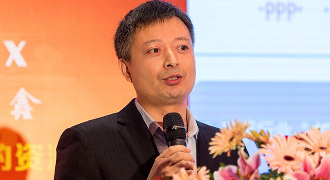

领导致辞

感谢各界朋友对项目管理中心的关注、关心与支持！
在项目管理中心班子的带领下，经过十年的发展和市场风雨的洗礼，公司依靠高素质的各类管理人才和科学高效的管理方法，本着“诚信与责任”的经营理念，和“让顾客满意，创企业绩效，展员工价值，担社会责任”的企业宗旨，项目管理中心在桥梁、隧道、市政公用工程、文物保护、房屋建筑等多个施工管理领域取得了不俗的业绩，为企业赢得了良好的口碑。
项目管理中心拥有各类专业管理技术人员50余人，主要是由曾在中国铁建、中国中铁、中国水电、中国建筑等大型央企工作多年的具有相关专业技术职称的工程师和具有专业技能的综合性管理人才及技术工人组成，是一支朝气蓬勃、工作严谨、技术一流、团结协作、素质优秀的建筑类施工管理专业团队。中心整合了集造价师事务所、会计师事务所、律师事务所、保险公司、施工企业等28家行业精英，为做优质项目夯实了基础。
展望未来的发展之路，真诚希望与各界朋友携手，共创价值！相信我们的合作一定会实现双方互补和共赢！
再次感谢您光临项目管理中心网站！
项目管理中心总经理：范建超